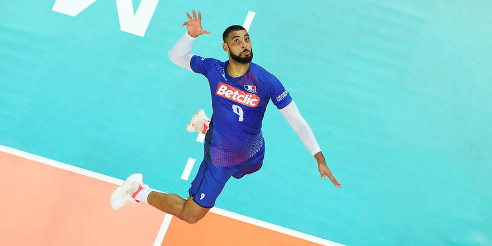
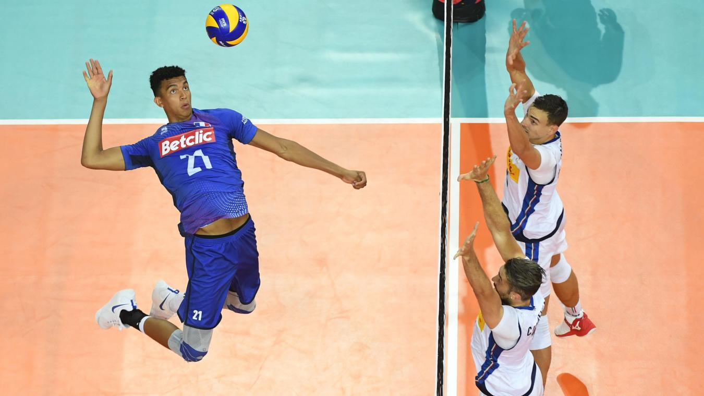

Le passeur est le maitre du jeux, c'est lui qui touche le plus de balle et qui choisit qui
attaque dans le jeu.
c'est surement le role le plus compliqué car il faut étre trés rapide et extremement précis. L'image
représente
Antoine Brizard, le passeur de l'équipe de france et certainement l'un des meilleur passeur du monde

Le Réceptionneur attaquant est un rôle équilibré où il faut autant defendre que attaquer, ils
sont 2 sur le
terrain et permettent d'avoir un large choix d'attaque tout en completant la defense. Erwin Ngapeth est le
meilleur
R4 du monde en ce moment il est trés talentueux et marque de nombreux point tout en sauvant énormement de
balle.
Malgré sa puissance c'est sa technique qui lui permet d'avoir d'aussi bonne perfomance.
Le pointu est l'attaquant de l'équipe c'est géneralement un gaucher et il est extremement bon
en attaque que ce
soit au filet ou au 3 mètres quand on lui envoie la balle il doit marquer le point. Yuji Nishida est le
pointu
japonais, il est trés impresionnant du à sa detente et sa puissance comparé à sa taille. Petit comparé aux
autres
joueurs de son poste, il n'est pas du tout désaventagé car sa detente est exceptionelle.

Le central est le poste réservé au plus grand, il joue au milieu du filet et attaque des passe
trés rapide.
Ils defendent aussi énormement au bloc du a leur taille ce qui permet d'avoir a la fois une grosse force de
frappe
et d'alleger la defense voir même annuler l'attaque adverse. Barthélémy Chinenyeze est le central de
l'équipe de
France, il est trés bon a son poste et posséde une attaque trés puissante avec un bloc trés performant.
Les libéros et le pillier de la defense restent à l'arrière et couvrent tous les autres, étant
trés fort en defense
ils permettent de remettre la balle sur le passeur pour ensuite pouvoir bien attaquer sans eux le jeux
serait
impossible. Jenia Grebennikov est le meilleur libéro de son temps sauvant toutes les balles, il donne
l'impression d'étre un vrai mur. De plus sa précision permet de contre-attaquer avec précision